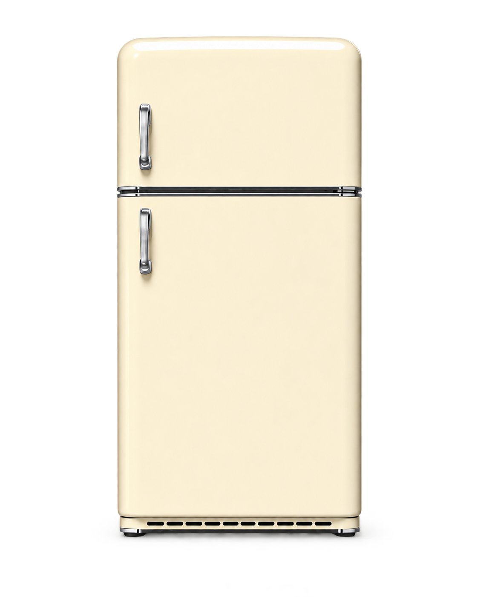

星期四 · 9 月 18 日早上好，
早上好，
今天吃点什么？
把冰箱里的食材交给 FridgeAI，少一点浪费，多一点恰到好处的美味。

🥬 从空冰箱开始由你亲自添加
📷 支持拍照识别确认后才入库
✨ AI 按真实库存推荐
MY FRIDGE
我的冰箱
从空冰箱开始，请添加你真实拥有的食材。
📷 拍食材 / 上传小票
AI 会识别食材、数量与保质期；确认后才入库。
AI 食谱
还没有生成菜谱
添加食材后，让 FridgeAI 看看今天能做什么。
MY DISHES
我的菜品
你做过的每一道饭，都会成为下一次的温暖灵感。
奶油鸡肉意面
今天 · 用掉了鸡胸肉、菠菜和牛奶
草莓菠菜沙拉
昨天 · 10 分钟完成的清爽午餐